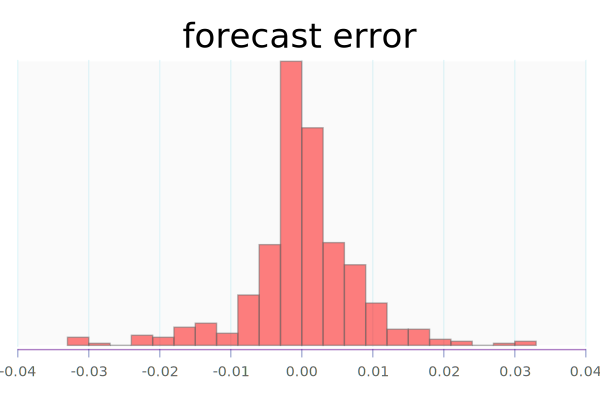
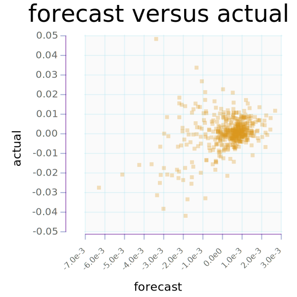
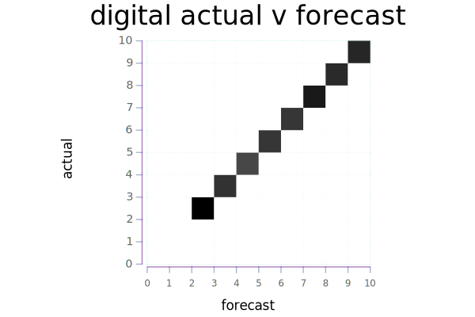

Start Date |
12 Feb 2018 |
End Date |
06 Feb 2020 |
n |
500 |
daily average return |
4.89e-4 |
average return pa |
1.22e-1 |
daily average sd return |
9.08e-3 |
average sd return pa |
1.44e-1 |


scatter chart of ma 0.99 vs std 0.95


daily average forecast |
3.49e-4 |
daily average sd forecast |
1.21e-3 |




stack build --exec "$(stack path --local-install-root)/bin/online-market-examples run" --file-watch